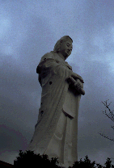
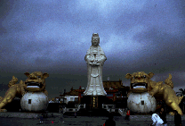
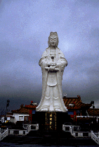
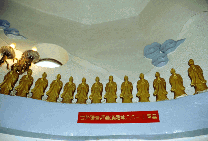
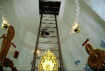
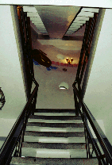
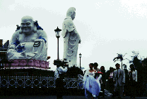
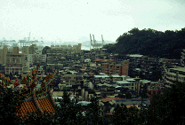
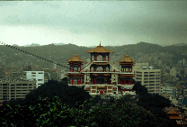

極楽寺大観音/基隆
  
台湾有数の港町基隆。台湾のなかでも特に薄汚れた雰囲気の漂うこの街を高台から見下ろすように立っているのがこの大観音。入口は町中なのだがそこから延々と山中の階段を登っていく。結構キツイ道程だ。大観音は高さ22.5メートル。内部はかなり狭いながらも階段で一番上まで登る事が出来る。途中丸窓が幾つも空いており、スタイルとしては高崎の大観音に近い。
  
高台のてっぺんだけあって眺めはよい。街のシンボルになっているところも高崎に何となく似ている。観音さまの周りにはお土産物屋が並び、いい雰囲気。ただウエディングドレス＆タキシードの新婚さんがこれをバックに記念写真を撮っていたのに関しては私の理解の範疇を越えていた。
  
次のスポットへGO!
台湾大仏列伝のページへ
珍寺大道場 HOME